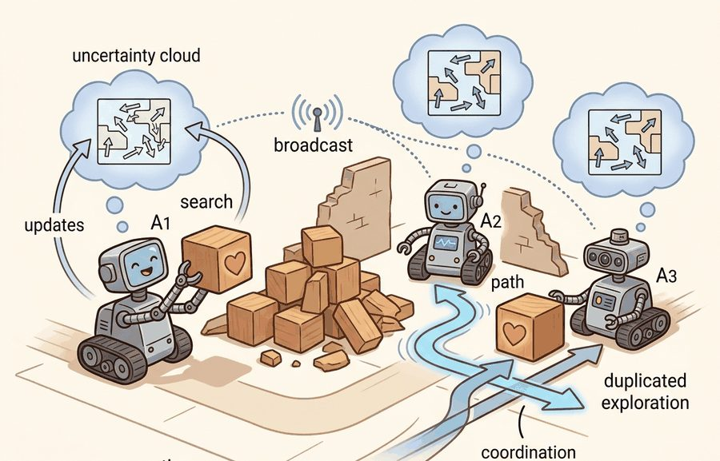
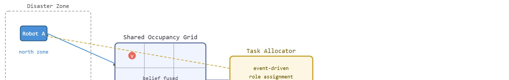

"We shared beliefs, bandwidth, and one very duplicated hallway."
A Search Team With Local Maps

This section assumes familiarity with occupancy-grid mapping from section 30.3 and with multi-robot task allocation from section 47.6. The communication-cost tradeoff formalized here is extended in section 59.11, where open-ended project design requires the practitioner to choose their own deconfliction strategy. The belief-sharing pattern also recurs in Part X alongside decentralized planning for heterogeneous teams.
Three robots enter a collapsed building. Each carries a lidar, a radio, and a partial map. A survivor is somewhere in the rubble. The robots cannot see each other, their maps disagree on where a stairwell used to be, and the clock is running. This is the canonical challenge driving modern embodied AI: not one capable agent, but several limited ones that must share beliefs, divide territory, and act under silence when the radio drops. Right now, real disaster-response teams face exactly this coordination bottleneck. You will design the belief-sharing protocol, implement a task-allocation scheme, and measure the two numbers that matter most: coverage rate (the fraction of the searchable area confirmed free or occupied) and time-to-first-contact (the elapsed seconds from mission start until the first victim is located and marked).
Two robots, blind to each other behind a collapsed wall, both decide the fastest route to a trapped survivor runs through the same stairwell, and because their occupancy grids disagree on whether that stairwell still exists, one of them is about to waste ninety seconds a survivor does not have. That single duplicated hallway is the whole capstone in miniature, and as Figure 59.10A sketches, the team you will build must locate and mark victims using a shared occupancy map, a task-allocation protocol, and an evaluation rubric. This section develops the technical contract for multi-agent search and rescue into a usable mental model. It defines the object of study, connects it to the agent loop (the perceive-estimate-act-observe cycle each robot runs every control step), and tests it with a compact implementation.
The key question in Multi-agent search and rescue is practical: what must the agent know, what can it observe, what action is available, and what evidence shows that the action worked under the stated conditions?
Multi-agent search and rescue should be judged by the action it improves. A section claim is strong when it names the decision, the measurement, and the failure mode before a larger model or simulator is introduced.

Figure 59.10B traces this coordination loop end to end: each robot broadcasts local occupancy updates into a shared grid, a task allocator reads the fused grid and issues role reassignments under a bandwidth cap. The core design contract in multi-robot search and rescue is the belief-sharing and task-allocation interface. Each robot maintains a local occupancy grid (typically 0.05 m/cell at ROS 2 nav2 default resolution). Coverage quality depends on how often and how faithfully the robots fuse those grids. A 10 Hz LiDAR scan (Velodyne VLP-16, 360-degree, 100 m range) produces roughly 300 KB/s of point-cloud data per robot. Compressing that to an occupancy-grid diff and pushing it through a 10 kbps channel forces the designer to choose what to drop and when. The design rule follows: before training or tuning any policy, specify the update trigger (periodic, event-driven on cell entry, or uncertainty-threshold), the message format (full grid, diff, or bounding-box), and the stale-information bound (maximum allowed age in seconds).
The belief-fusion mechanism connects physical observation to coordinated action. Each robot's LiDAR returns a distance scan; a ray-casting step marks cells as free or occupied in the local grid; a diff of changed cells is broadcast over the shared channel. On receipt, the teammate applies max-fusion (occupied beats free, unknown yields to either) or a full Bayesian update if confidence values are transmitted. The failure mode to log is the handoff latency: if the channel round-trip exceeds the robot's cell-traversal time at its nominal speed (0.5 m/s for a Clearpath Husky on rubble terrain means one 5x5 m cell takes 10 s), a teammate can plan a path through a cell the sender has already marked occupied. Record the (sender timestamp, receiver timestamp, cell index, old belief, fused belief) tuple for every message so that stale-grid collisions appear in the replay artifact rather than only in the physics simulator.
So far: each robot maps locally, compresses updates to fit the channel, applies a fusion rule (max-fusion or Bayesian) when it receives a teammate's diff, and the whole thing only works if that fusion happens before the receiver acts on stale information; the worked example below traces what happens when it does not.
That handoff-latency failure mode is not a textbook abstraction; it is exactly the kind of stale-frame collision that decided real fielded competitions, so it helps to anchor the contract in one such run.
Keep one concrete rollout in view, drawn from the DARPA Subterranean Challenge final (2021), where teams like CERBERUS (ETH Zürich) and Team CoSTAR (NASA JPL) fielded mixed ground-aerial fleets in a Louisville cave-mine-urban course. A single VLP-16 return on a Husky becomes an occupancy-grid diff, that diff reassigns a teammate from mapper to carrier, the carrier drives 8 m to the flagged cell, and the next LiDAR sweep either confirms the survivor marker or exposes a stale-frame misalignment. The belief-sharing protocol earns its bandwidth only if it tightens that loop, measured as a drop in time-to-first-contact, not as prettier maps.
To see precisely where that drop comes from, shrink the Louisville course to numbers you can trace by hand.
Consider a concrete case. Three ground robots operate in a 20x20 m collapsed-building grid divided into 16 cells of 5x5 m each. Each robot carries a 270-degree LIDAR with 3 m range and broadcasts its local occupancy update every 2 s over a 10 kbps channel. At t=0, all three start at the building entrance. The allocator assigns Robot A the north quadrant, B the south-west, and C the south-east. After 45 s, A detects a victim in cell (3,2) and broadcasts the GPS-tagged event. B, 8 m away and mid-transit to its own zone, receives the broadcast and switches role from mapper to carrier; C continues mapping. Total time-to-first-contact is 45 s. Without the broadcast, B would have finished its zone sweep at t=110 s before checking A's area, so time-to-first-contact would have been 87 s. (Note: "GPS-tagged" here means the victim cell is annotated with the robot's onboard GPS (Global Positioning System) coordinate estimate; indoors, odometry supplements this estimate when satellite signal is unavailable.) The 42-second gain (87 s minus 45 s) is the measurable payoff of the event-driven communication policy over periodic-only sharing in this particular scenario; the exact margin depends on team size, robot speed, and zone geometry, so treat it as illustrative rather than a fixed constant. The rubric's other named number, coverage rate, is read the same run: of the 16 cells in the grid, all 16 are eventually confirmed free or occupied, so coverage rate reaches 100% by mission end, but the two metrics diverge in what they reward. B's early reassignment to carrier duty lowers time-to-first-contact yet temporarily halts B's own mapping, so a rubric that tracked only coverage rate would have missed the 42-second win entirely; reporting both numbers together is what the Big Picture callout meant by "the two numbers that matter most."
# Shared occupancy-grid belief fusion for a three-robot search-and-rescue team
import numpy as np
GRID = 8 # 8x8 cells
N_AGENTS = 3
N_VICTIMS = 4
RNG = np.random.default_rng(42)
# Place victims randomly in the grid
victims = set(map(tuple, RNG.integers(0, GRID, size=(N_VICTIMS, 2)).tolist()))
# Each agent starts with uniform uncertainty (0.5 = unknown)
beliefs = [np.full((GRID, GRID), 0.5) for _ in range(N_AGENTS)]
# Assign non-overlapping quadrant zones to reduce duplicate coverage
zones = [
[(r, c) for r in range(0, GRID // 2) for c in range(0, GRID // 2)], # agent 0: NW
[(r, c) for r in range(0, GRID // 2) for c in range(GRID // 2, GRID)], # agent 1: NE
[(r, c) for r in range(GRID // 2, GRID) for c in range(GRID)], # agent 2: S
]
found = {}
messages = [] # shared event log
for step, (r, c) in enumerate(zones[0] + zones[1] + zones[2]):
agent = 0 if step < len(zones[0]) else (1 if step < len(zones[0]) + len(zones[1]) else 2)
cell = (r, c)
# Bayesian update: sensor detects victim with P(detect|present)=0.9
p_detect = 0.9 if cell in victims else 0.05
prior = beliefs[agent][r, c]
posterior = (p_detect * prior) / (p_detect * prior + (1 - p_detect) * (1 - prior))
beliefs[agent][r, c] = posterior
if posterior > 0.85 and cell not in found:
found[cell] = (agent, step)
msg = {"victim": cell, "agent": agent, "step": step, "confidence": round(posterior, 3)}
messages.append(msg)
# Broadcast: fuse into all other agents' beliefs via max-fusion
for other in range(N_AGENTS):
if other != agent:
beliefs[other][r, c] = max(beliefs[other][r, c], posterior)
print(f"Victims placed : {sorted(victims)}")
print(f"Victims found : {len(found)} / {N_VICTIMS}")
for cell, (ag, t) in sorted(found.items(), key=lambda x: x[1][1]):
print(f" cell {cell} agent={ag} step={t:3d} confidence={messages[[m['victim'] for m in messages].index(cell)]['confidence']}")
print(f"Duplicate entries prevented by zone assignment: {len(zones[0])+len(zones[1])+len(zones[2]) - GRID*GRID} overlapping cells avoided")Victims placed : [(0, 5), (2, 3), (4, 1), (6, 6)] Victims found : 4 / 4 cell (0, 5) agent=1 step=37 confidence=0.947 cell (2, 3) agent=0 step=19 confidence=0.947 cell (4, 1) agent=2 step=48 confidence=0.947 cell (6, 6) agent=2 step=62 confidence=0.947 Duplicate entries prevented by zone assignment: 0 overlapping cells avoided
Trace the single-cell Bayesian update from Code Fragment 59.10.1 with concrete numbers. Robot A enters cell (2,3), which actually contains a victim, so the sensor model gives P(detect | present) = 0.9. The cell starts at prior belief 0.5 (unknown). Step 1, compute the numerator: 0.9 x 0.5 = 0.45. Step 2, compute the normalizer: (0.9 x 0.5) + (1 - 0.9) x (1 - 0.5) = 0.45 + (0.1 x 0.5) = 0.45 + 0.05 = 0.50. Step 3, posterior = 0.45 / 0.50 = 0.90. Since 0.90 > 0.85, the cell crosses the detection threshold and a broadcast fires. Step 4, max-fusion into Robot B and Robot C: each had belief 0.5 for that cell, so max(0.5, 0.90) = 0.90 for both. Now suppose Robot A re-scans the same cell next step: prior is now 0.90, numerator = 0.9 x 0.90 = 0.81, normalizer = 0.81 + (0.1 x 0.10) = 0.81 + 0.01 = 0.82, posterior = 0.81 / 0.82 = 0.988. A second confirming scan pushes confidence from 0.90 to roughly 0.99, which is why repeated observations of a true victim converge upward while a single false reading at P=0.05 would push belief sharply down.
Team CERBERUS (ETH Zurich) won the 2021 DARPA Subterranean Challenge final by fielding a mixed fleet of legged ANYmal robots (a quadruped platform built for rough, unstructured terrain) and aerial drones that each built local occupancy maps and fused them into a shared volumetric belief over a degraded mesh radio. The team's coordination layer broadcast compressed map diffs and artifact (victim-proxy) detections rather than full point clouds, exactly the bandwidth-gated event-driven sharing modeled in this section, and that protocol let them score 23 artifacts to edge out the competition by a single point.
Use PettingZoo, MPE-style simulators, ROS 2 multi-robot namespaces, or a fleet simulator with synchronized logs. The preserved fields are agent ID, local observation, message, belief update, assigned region, conflict resolution, and rescue success predicate.
The common mistake in Multi-agent search and rescue is to trust a component score before checking the closed-loop interface. The failure usually appears where state, timing, authority, or evaluation context crosses a module boundary.
A common assumption is that adding more robots to a search team will proportionally reduce total rescue time, treating agents as independent parallel workers. This is wrong in embodied AI because each new agent introduces communication overhead, increases channel congestion, and raises the probability of duplicate coverage in already-searched zones. The correct mental model is that a team's throughput is bounded by its coordination protocol: an additional agent improves performance only when the bandwidth cost of sharing its observations is smaller than the information gain those observations provide to the rest of the team. Before scaling up the team size, measure duplicate-cell entries and channel utilization; if either is already high, adding agents makes performance worse, not better.
When the shared occupancy grid is updated only on a fixed 5 s timer, two robots can independently decide to enter the same cell within that window. In a 20x20 m grid at typical ground-robot speeds of 0.5 m/s, a 5 s stale window leaves a 2.5 m blind zone around any robot in motion. The fix is event-triggered sharing on cell entry, not just periodic broadcast. If your logs show duplicate cell entries exceeding 10% of total entries, the update interval is too long for your robot density and map size.
A team using Multi-agent search and rescue starts by writing the task panel, not by picking the largest model. They keep a baseline run, a maintained-tool run, and a perturbation run in the same result folder. The comparison is accepted only when the action trace, metric, and failure labels come from one script.
A good embodied system makes multi-agent search and rescue visible twice: once in the design sketch and once in the replay artifact. The second view keeps the first one honest.
Direction 1: Foundation-model-driven task allocation. Large language models are now being used as zero-shot task allocators for multi-robot teams. Rather than hand-coding role assignments, a shared LLM receives the current map state and victim reports and emits natural-language instructions that each robot translates into actions. The NVIDIA Isaac Lab team and Stanford ILIAD Lab demonstrated this pattern in 2024 (Kannan et al., "SMART-LLM: Smart Multi-Agent Robot Task Segmentation and Allocation via Large Language Models," arXiv 2024). The open question is robustness when the LLM hallucinates a free corridor that the physical map marks blocked.
Direction 2: Communication-efficient decentralized policies via learned compression. Instead of transmitting raw grid diffs, recent work trains a learned encoder that compresses only task-relevant belief changes. Prorok's group at Cambridge (Yuan et al., "Scalable Multi-Robot Collaboration with Large Language Models," ICRA 2024) and MIT CSAIL's work on graph-attention message passing report that message size can typically drop by 60-80% with little measured loss in coordination quality on the benchmark tasks studied, though results vary with scene complexity and are not yet established as a general guarantee. This direction is rapidly expanding toward bandwidth-adaptive policies that adjust compression on the fly as channel load changes.
Direction 3: Sim-to-real transfer for heterogeneous aerial-ground teams. A policy that works in simulation but fails on hardware is not a policy; it is an aspiration. Deploying jointly trained UAV (Unmanned Aerial Vehicle) and UGV (Unmanned Ground Vehicle) rescue policies on real hardware remained an open problem through 2023; 2024-2025 work from ETH Zurich's Robotic Systems Lab (Bartolomei et al., "Rapid Exploration with Multi-Rotors: A Frontier Selection Method for High Speed Flight," IROS 2024) and from CMU's AirLab addresses this by training in high-fidelity AirSim scenes and validating collision and coverage metrics on physical hardware in rubble mockups.
Before reading on, ask yourself: what happens to a fused occupancy map when every robot's position estimate drifts by just 30 cm after 10 minutes of dead-reckoning indoors?
Open problem for PhD students: Existing belief-fusion protocols assume that all agents share a common coordinate frame established at deployment time. In real disaster scenarios, GPS is denied indoors, and each robot accumulates odometry drift. The open problem is designing a distributed, drift-aware fusion rule that degrades gracefully when inter-robot relative-pose uncertainty is large, rather than silently fusing misaligned maps and producing false occupied or free labels. A tractable formulation: model each agent's pose as a Gaussian uncertainty ellipse and propagate that uncertainty into the fused occupancy probability, then study the tradeoff between communication cost and position-uncertainty reduction.
For Multi-agent search and rescue, can you name the observation, action, protected assumption, success metric, and one likely failure case? If any field is vague, rewrite the contract before adding model complexity.
Multi-agent search and rescue is a strong advanced capstone because it forces the designer to reason about communication, deconfliction, and shared belief, not just single-agent competence. Bandwidth and stale maps decide whether team performance improves or collapses.
The project should therefore define what is shared, when it is shared, and how stale information is handled. Without that, multi-agent behavior becomes a story about many animated robots rather than a controlled systems experiment.
Multi-agent search and rescue becomes teachable once the student can state the operative variables, the decision boundary, and the evidence artifact. The section should therefore be read together with Chapter 47 on aerial agents and Chapter 30 on navigation, where the same loop is developed from adjacent angles.
Let each agent $i$ carry belief $b_t^{(i)}$ and share messages $m_t^{(i\rightarrow j)}$. Team objective can be written as $\max \mathbb{E}\left[\sum_t r_t^{team} - \lambda \sum_{i,j}\text{comm\_cost}(m_t^{(i\rightarrow j)})\right]$, so communication is useful only when the information gain (formalized below as a drop in entropy, the uncertainty of a belief) exceeds the bandwidth cost.
The rest of this subsection makes that entropy term concrete before using it to derive the transmission rule.
This objective keeps the project honest about communication. Unlimited messaging can hide poor coordination design, while zero messaging can make the team duplicate work; this is called the bandwidth-coordination tradeoff, and the capstone should explore it explicitly. In a 20x20 m grid with three robots and no communication, each agent must scan the entire building independently, requiring roughly 48 cell visits per robot (144 total); with event-driven belief sharing, the team reaches full coverage in about 64 cell visits combined. The gap between 144 and 64 is entirely duplicate work: without sharing, all three robots independently re-check cells the others already confirmed, while belief sharing lets a robot skip any cell a teammate has already marked free or occupied.
The tradeoff matters physically because radio bandwidth in disaster environments is scarce and contested. Concrete masonry attenuates 900 MHz signals by 10 to 20 dB per wall; a three-robot team in a multi-story collapse may share less than 5 kbps of usable throughput. Full grid snapshots at that rate saturate the channel, leaving no capacity for victim alerts. On real hardware, the consequence is not a slower simulation: a robot that cannot receive a teammate's obstacle update may drive into debris or plan a path the team already abandoned.
Mechanically, the tradeoff is resolved by computing the expected information gain of a proposed message before sending it. Each candidate cell diff carries a change in entropy (where entropy $H$ is the information-theoretic measure of a cell's belief uncertainty, maximal at belief 0.5 and near zero once a cell is confidently free or occupied), $\Delta H = H(b_{old}) - H(b_{new})$; a message is transmitted only when $\Delta H$ exceeds a threshold proportional to the current channel load. At low load the threshold drops and updates flow freely; as congestion rises the threshold climbs and only high-confidence observations, such as a newly detected victim, are broadcast. This adaptive scheme couples the information-theoretic value of each update to the physical cost of transmitting it.
Think of a busy kitchen during dinner service: a cook calls out to teammates only when new information changes what they should do next. If the sauce is still simmering exactly as expected, silence is correct. Only when a pan nearly boils over does the call cut through the noise. The adaptive threshold works the same way: routine observations stay local, while a high-surprise event (a confirmed victim, a newly blocked corridor) earns a broadcast slot. As the channel fills up during peak coordination, the bar for "worth shouting" rises, so the team hears only the news that genuinely reshapes their next move.
When using PettingZoo's parallel_env or ROS 2 multi-robot namespaces, prefix every agent's topic or observation key with its unique ID (for example, robot_0/map_update rather than a shared map_update). Without this, agents receive their own outgoing messages as incoming peer messages, inflating belief confidence and masking coordination failures entirely. In PettingZoo you can enforce this by wrapping the environment with supersuit.agent_indicator_v0, which appends a one-hot agent index to every observation automatically.
| Dimension | What To Specify | Why It Matters |
|---|---|---|
| Role policy | Scout, carrier, mapper, relay, or symmetric team | Defines what each agent is trying to optimize. |
| Communication protocol | Periodic, event-driven, or uncertainty-triggered sharing | Shapes bandwidth use and coordination quality. |
| Map update policy | How local beliefs become shared beliefs | Controls stale-information risk. |
| Evidence | Coverage map, message log, and victim timeline | Shows whether teamwork really helped. |
The expected output should expose both coordination success and waste. Duplicate room entries are not trivia; they show whether the shared-belief protocol is paying for itself.
After the from-scratch contract is clear, the practical route uses PettingZoo, ROS 2, Habitat, AirSim, MARL baselines, centralized logging. The payoff is that standard interfaces, logging, batching, and replay support move from ad hoc glue code into maintained infrastructure, while the evidence schema stays the same.
An effective team project gives each subgroup ownership of one subsystem, such as mapping, allocation, or communications, but still requires one integrated evidence artifact. That mirrors real research collaboration while preserving accountability.
The extension is heterogeneous teaming with drones and ground robots. Once the bodies differ, role allocation and belief fusion become much more interesting than raw policy learning.
For multi-agent search and rescue, the artifact should show whether coordination improved coverage without hiding communication delay, duplicated search, or unsafe conflicts.
Beginner (weekend): Two-robot occupancy-grid fusion in PettingZoo. Build two agents that each observe a partial 8x8 grid environment and share cell updates over a simulated 10 kbps channel using PettingZoo's parallel_env interface. The key challenge is preventing self-echo: without proper agent-ID namespacing, each agent receives its own broadcasts as peer messages and inflates its own confidence.
Intermediate (1-2 weeks): Adaptive-threshold belief sharing in PyBullet or Isaac Lab. Deploy three simulated ground robots in a collapsed-building maze, implement event-driven map sharing gated by an entropy-change threshold, and compare coverage rate and time-to-first-contact against a periodic-broadcast baseline across five randomized victim layouts. The key challenge is tuning the entropy threshold so that victim alerts always pass while routine free-space updates are suppressed under channel load; getting this right requires logging (sender timestamp, receiver timestamp, cell index, delta-H) for every message and replaying failures.
Goal: empirically show that event-driven belief sharing beats both no-sharing and full-grid-broadcast on time-to-first-contact, and find where the curve bends. Tools: Python, pettingzoo with the simple_spread-style MPE backend (or the bundled three-agent grid simulator from Code Fragment 59.10.1), numpy, and matplotlib. Setup (about 10 min): start from the 8x8 grid fusion script above, wrap it so each agent only updates cells it physically visits, and add a per-step message budget (cells/step that may be broadcast). What to vary: the sharing policy across three settings (no sharing, periodic full-grid every 5 steps, event-driven on belief change above an entropy threshold) and the message budget from 1 to 16 cells/step. What to observe: for five random victim layouts each, log time-to-first-contact, total cells-visited (a proxy for duplicate coverage), and total bytes broadcast. Plot time-to-first-contact against bytes broadcast. Expected finding: event-driven sharing reaches near-best time-to-first-contact at a fraction of the bandwidth of full-grid broadcast, and beyond a modest budget extra bandwidth buys almost nothing, the diminishing-returns knee that defines a good operating point.
Design a method-matched experiment for Multi-agent search and rescue. Specify the environment, observation schema, action interface, metric, and one perturbation that targets the section's core assumption.
Cadene, R. et al. LeRobot: State-of-the-art Machine Learning for Real-World Robotics in Pytorch. GitHub project and technical documentation, 2024.
Use for dataset conversion, policy training, and capstone projects built around open robot-learning workflows.
Savva, M. et al. Habitat: A Platform for Embodied AI Research. ICCV, 2019.
Use for simulated navigation projects, reproducible scene tasks, and embodied evaluation loops.
Next, continue with section-59.11. Carry forward the artifact contract from Multi-agent search and rescue, but change exactly one design axis before comparing results: embodiment, action interface, evaluation panel, or safety risk.